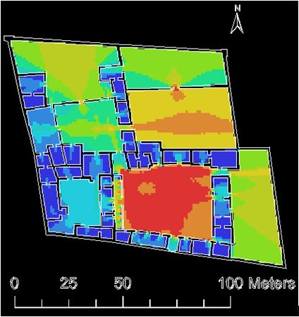

Current research projects:
1. Title: War or Peace? Assessing the Rise of the Tiwanaku State Through Experimental Archaeology and Projectile Point Analysis
Examples of serrated Tiwanaku-style projectile points from the Taraco Archaeological Project. |
Collaborators: Christine Hastorf (UC Berkeley), Bruce Bradley (University of Exeter), Daniel Vera (Universidad Nacional Mayor de San Marcos), Karina Aranda (Universidad Nacional Mayor de San Marcos, Vanessa Jimenez (Unidad de Arqueología y Museos).
Outputs: 1. Hu, Di. 2017. John Wymer Bursary Report: War or
peace? Assessing the rise of the Tiwanaku state through projectile-point analysis. Lithics 37: 84-86.
2. “War or peace? Assessing the rise of the Tiwanaku state through projectile point analysis.” with Christine Hastorf, Daniel Vera, Bruce Bradley, Karina
Aranda, and Vanessa Jimenez. Paper presented at WAC-8, Kyoto, Japan, September 1st, 2016 . Session on flaked stone analysis in South America
organized by Astolfo Araujo, Mercedes Okumura, and Bruce Bradley
2. Title: The Co-evolution of Latin American Prisons and Colonial Capitalism
|  |
Intervisibility in the textile workshop of Pomacocha. |
I should like to use the lens of prisons to explore the connections among the development of European capitalism and the architecture of control and confinement. More specifically, I should like to compare the spatial syntax of Latin American textile workshops to eighteenth to mid-nineteenth century prisons—particularly those employing prison labor—in England and the United States. I want to understand how social difference was spatially produced and reproduced in these institutions, which is critical to comparing the practical effects of these institutions. Archival research on the influences of the architects and policy makers related to the prisons should clarify if the practical similarities and differences among US and English prisons and Latin American textile workshops stem from common intellectual inspirations. So far, discussion of Latin American textile workshops and prisons is isolated from broader conversations about the global exchange of ideas concerning social control and reform through labor.
3. Title: Social Landscapes of Cooperation and Conflict in Vilcashuamán Province on the Eve of Inka Conquest
 |
Geographic distribution and size of pukaras of Vilcashuamán province as surveyed by satellite and aerial imagery. |
This multi-year project has the following components:
Past research projects:
1. Title: Labor under the Sun and the Son: Landscapes of Control and Resistance at Inka and Spanish Colonial Pomacocha, Ayacucho, Peru
Abstract: Why do the oppressed not rebel, especially when they outnumber their oppressors? What are the social conditions for armed rebellion? Should we be focusing on armed rebellion rather than other kinds of resistance? This dissertation examines these general questions about the nature of social movements in the context of Spanish colonialism. Specifically, it unpacks the long term social conditions that enabled the conjuncture of local armed revolts and regional-scale rebellions in the late colonial period (late eighteenth/early nineteenth century) in Peru through a combination of archaeological and historical evidence. The primary case study is a village called Pomacocha, located in Vilcashuamán province in the modern region of Ayacucho, Peru.
By putting an important case study “under the microscope,” we can examine how
local social conditions influenced regional social conditions for revolt and vice versa. Pomacocha was intensely affected by both Inka and Spanish colonialism and provides rare insight into the lives of the people whose labor sustained the colonial regimes. It began as a transplanted colony of agriculturalists (
mitmaqkuna
) to supply food for the nearby Inka palace and the Inka provincial capital of Vilcashuamán (Willka Wamán). After the Spanish conquest, the agricultural settlement at Pomacocha was abandoned. Later, an
hacienda
-
obraje
was established and a new native community sprang up around it. The area became a politically and economically important zone for the Spaniards. How did the materiality of social relations inform strategies of resistance by exploited laborers in the Andean village of Pomacocha? Historical documents attest to the poor working conditions and abuses at the textile workshop of Pomacocha during the Spanish colonial period, but no significant armed uprising occurred until after the Tupac Amaru II rebellion of 1781. To understand and contextualize the short-term and long-term causes of the late colonial upheaval, I analyze the long-term evolution of strategies of control and resistance at Pomacocha, starting with the Inka period. I combine archival research, archaeological excavations and surveys, analysis of material
culture, surname analysis of censuses, and space syntax analysis to show that strategies of state control and bottom-up resistance coevolved from the Inka period, and that this coevolution resulted in a social landscape conducive to alliances across social groups in the late colonial period. There has been little archaeological work aimed at understanding the relationship between forms of resistance and the materiality of social relationships of coerced laborers in the Inka and Spanish colonial periods. By understanding the effect of Inka and Spanish colonial institutions of labor on identity and social cohesion, we gain a better understanding of the motivations, enabling social conditions, and strategies of resistance to such institutions. By taking a long-term view of how the workers of a single community negotiated strategies of control of labor, my dissertation fleshes out a typical case study of the interplay among local motivations and wider social context for general rebellion in the late eighteenth and early nineteenth centuries.
Outputs:
1. Hu, Di, and M. Steven Shackley. (Under review) ED-XRF analysis of obsidian artifacts from Yanawilka, a settlement of transplanted laborers (mitmaqkuna), and implications for Inca imperialism. Journal of Archaeological Science: Reports
2. Hu, Di. 2017. The Revolutionary Power of Andean Folk Tales. Sapiens. May 16, 2017. https://www.sapiens.org/archaeology/andean-folk-tales-revolutionary-
power/
3. Hu, Di and Alicia Miranda Alcántara. 2016. Informe Final del Análisis de los Restos Arqueológicos Exportados del Proyecto de
Investigación de Pomacocha Colonial. Submitted to the Ministry of Culture, Lima, Peru.
4. Hu, Di. 2015. Engaging historical archaeology through fiction: A ‘choose your own adventure.’ https://performingthepastpresent.wordpress.com/chooseadventure/
5. Hu, Di. 2013.Stahl fund final report 2013: Archival research and balloon aerial photography of Pomacocha, a Late Horizon and Spanish Colonial
site, in Ayacucho, Peru.
6. Miranda Alcántara, Alicia and Di Hu. 2013. Informe final del Proyecto de Investigación Arqueológica de Pomacocha Colonial.
Submitted to the Ministry of Culture, Lima, Peru.
7. Hu, Di. 2012. Los documentos en el Archivo San Francisco de Lima sobre el obraje
de Pomacocha de las monjas de Santa Clara de Huamanga. Boletín del Archivo San Francisco de Lima 37: 3-4.
Presentations:
1. “Engaging historical archaeology through fiction: A ‘choose your own adventure.’” Society for American Archaeology Conference, Forum on “Performing the
Past/Present” organized by Bryan Cockrell, Katie Chiou, Marguerite DeLoney, and Di Hu, San Francisco, CA, April 16th, 2015.
2. “The evolution of control and resistance at an Andean textile workshop 18th-19th centuries.” Paper presented at the 2014 Conference for Ford Fellows, UC
Irvine, September 27th, 2014.
3. “Late colonial Andean revolts and rebellions: A view from the archaeology of labor and identity.” Paper presented at the Society for Historical Archaeology
conference, Quebec City, Canada, January 10th, 2014.
4. Changes in the materiality of language, landscape, and lithics in the Andes from the colonial era to the present.” Paper presented at the Society for
American Archaeology conference, Honolulu, HI, April, 2013.
5. “How do Slaves and Forced Laborers Rebel? Archaeology provides insight in two case studies from ancient Rome and the Spanish colonial Andes.” Public
lecture given at Berkeley Public Library, Berkeley, CA, January, 2013.
6. “Weaving for the Sun and the Son: A Comparison of Inka and Spanish Colonial Labor Organization of Textile Production.” Paper presented at the Society for
American Archaeology Conference, Sacramento, CA, March 2011. (Also presented at the Universidad Nacional San Cristóbal de Huamanga, November 24th, 2011 and at
the Fulbright Commission – Lima, Perú November 25th, 2011)
7. “Clothing and constraint: The history of control and resistance in the textile workshops of Ayacucho, Peru.” Paper presented at UC Berkeley, Archaeological
Research Facility November 17th, 2010.
8. Spanish Textile Workshops, Identity Transformation, and Revolts in colonial Ayacucho, Peru.” Paper presented at UC Berkeley, Archaeological Research
Facility September 23rd, 2009 and at Stanford University, Stanford Archaeology Center October 28th, 2009.
2. Title: The Lithics of Chiripa, Taraco Archaeological Project
1. Hu, Di, and M. Steven Shackley. (Under review) ED-XRF analysis of obsidian artifacts from Yanawilka, a settlement of transplanted laborers (mitmaqkuna), and implications for Inca imperialism. Journal of Archaeological Science: Reports
2. Hu, Di. 2017. The Revolutionary Power of Andean Folk Tales. Sapiens. May 16, 2017. https://www.sapiens.org/archaeology/andean-folk-tales-revolutionary- power/
3. Hu, Di and Alicia Miranda Alcántara. 2016. Informe Final del Análisis de los Restos Arqueológicos Exportados del Proyecto de Investigación de Pomacocha Colonial. Submitted to the Ministry of Culture, Lima, Peru.
4. Hu, Di. 2015. Engaging historical archaeology through fiction: A ‘choose your own adventure.’ https://performingthepastpresent.wordpress.com/chooseadventure/
5. Hu, Di. 2013.Stahl fund final report 2013: Archival research and balloon aerial photography of Pomacocha, a Late Horizon and Spanish Colonial site, in Ayacucho, Peru.
6. Miranda Alcántara, Alicia and Di Hu. 2013. Informe final del Proyecto de Investigación Arqueológica de Pomacocha Colonial. Submitted to the Ministry of Culture, Lima, Peru.
7. Hu, Di. 2012. Los documentos en el Archivo San Francisco de Lima sobre el obraje de Pomacocha de las monjas de Santa Clara de Huamanga. Boletín del Archivo San Francisco de Lima 37: 3-4.
1. “Engaging historical archaeology through fiction: A ‘choose your own adventure.’” Society for American Archaeology Conference, Forum on “Performing the Past/Present” organized by Bryan Cockrell, Katie Chiou, Marguerite DeLoney, and Di Hu, San Francisco, CA, April 16th, 2015.
2. “The evolution of control and resistance at an Andean textile workshop 18th-19th centuries.” Paper presented at the 2014 Conference for Ford Fellows, UC Irvine, September 27th, 2014.
3. “Late colonial Andean revolts and rebellions: A view from the archaeology of labor and identity.” Paper presented at the Society for Historical Archaeology conference, Quebec City, Canada, January 10th, 2014.
4. Changes in the materiality of language, landscape, and lithics in the Andes from the colonial era to the present.” Paper presented at the Society for American Archaeology conference, Honolulu, HI, April, 2013.
5. “How do Slaves and Forced Laborers Rebel? Archaeology provides insight in two case studies from ancient Rome and the Spanish colonial Andes.” Public lecture given at Berkeley Public Library, Berkeley, CA, January, 2013.
6. “Weaving for the Sun and the Son: A Comparison of Inka and Spanish Colonial Labor Organization of Textile Production.” Paper presented at the Society for American Archaeology Conference, Sacramento, CA, March 2011. (Also presented at the Universidad Nacional San Cristóbal de Huamanga, November 24th, 2011 and at the Fulbright Commission – Lima, Perú November 25th, 2011)
7. “Clothing and constraint: The history of control and resistance in the textile workshops of Ayacucho, Peru.” Paper presented at UC Berkeley, Archaeological Research Facility November 17th, 2010.
8. Spanish Textile Workshops, Identity Transformation, and Revolts in colonial Ayacucho, Peru.” Paper presented at UC Berkeley, Archaeological Research Facility September 23rd, 2009 and at Stanford University, Stanford Archaeology Center October 28th, 2009.
2. Title: The Lithics of Chiripa, Taraco Archaeological Project
Examples of flake tools from Chiripa (Taraco Archaeological Project). |
|
Calendar years |
S. Basin Phasing |
Basin Phasing |
Rowe Chronology |
|
1500-1000 BCE |
Early Chiripa |
Early Formative I |
Initial Period |
|
1000-800 BCE |
Middle Chiripa |
Early Formative II |
Early Horizon |
|
800-250 BCE |
Late Chiripa |
Middle Formative |
Early Horizon |
|
250 BCE- CE 300 |
Tiw. I Qalasasaya |
Late Formative I |
Early Intermediate |
|
CE 300-475 |
Tiw. III Qeya |
Late Formative II |
Early
Intermediate |
Table 1: Titicaca Basin Chronology (after Bandy 2004 and Hastorf 2008)
Through ceramic analysis and archaeological survey, others have shown that multi-community polities with their own stylistic and ceremonial traditions arose in the Middle Formative (Bandy 2004, 2006; Frye and Steadman 2001; Hastorf 2008; Steadman 1995, 1999). These important demographic and political transitions imply changes in the economy. This project analyzed the lithics of Chiripa to understand changes in procurement of raw materials and production during this important transition. The two main questions were:
1) Does the transition between the Early Formative and the Middle Formative reflect in significant changes in lithic production?
2) What artifact types co-occur and how do these relationships change over time?
A total of 1950 lithics excavated from dated and minimally disturbed contexts from the site of Chiripa were analyzed to address the questions. The lithics were excavated by the Taraco Archaeological Project from 1992 to 2006.
Most artifact classes showed significant changes that are consistent with increased nucleation of the different production stages as well as consumption and use of lithics. Ceremonially, Chiripa became an ever more important center for people to gather and celebrate in Middle Formative (Hastorf 2003; Hastorf et al. 2001). What is interesting is that the analysis of the Chiripa lithics suggests that the character of the gatherings may have also changed in Middle Formative. Because the nucleation of ceremonialism was an ongoing process since the Early Formative I, whereas nucleation of lithic production and use was most evident in the Middle Formative, it appears that the nucleation of ceremonialism actually preceded nucleation of productive activities like lithic production and agricultural production. This suggests that innovations in ceremonialism preceded innovations in the economy for the people who gathered at Chiripa, which is consistent with Hastorf’s (2003: 327) original thesis: “As the events grew more elaborate, they opened up the possibility to expand control in other realms, perhaps with ownership of lake resources, fields, or herds.” Ceremonialism preceding nucleation of productive activities may explain why we see monumental ceremonial architecture absent domestic and agricultural evidence elsewhere in the early Andes. A possible explanation is that as the gatherings became more regular, frequent, and involving more people, a critical tipping point was reached in both population size and level of cooperation, leading to innovations in lithic production.
Outputs:
Hu, Di. (Under review) The lithics of Chiripa: Implications for the increasing nucleation of productive activities on-site from the early to middle Formative. In: Recent Archaeology at Formative Chiripa: Production, Health and Intensification 1998-2006 Excavations of the Taraco Archaeological Project at Chiripa. Editor: Christine Hastorf.
3. Title: The Lithics of Kala Uyuni, Taraco Archaeological Project
Description:
 |
Examples of flake tools from Kala Uyuni (Taraco Archaeological Project). |
This project focused on how the character of daily life changed from the Late Formative I to the Late Formative-Tiwanaku transition through the lens of lithics:
Generally, daily life through lithics did not change significantly over time at Kala Uyuni. Two notable exceptions, however, was the increasing production and/or use of quicklime and the presence of serrated edges on flake tools.
Outputs:
Hu, Di. 2010. Análisis de los artefactos líticos, In Excavaciones en Kala Uyuni:Informe de la Temporada 2009 del
Proyecto Arqueológico Taraco, pp. 102-122. Submitted to the Unidad Nacional de Arqueología de Bolivia.
4. Title: Chincha Material Culture from the Max Uhle Collection, Phoebe Hearst Museum
Description: This project examined scale beams and stone artifacts of the Chincha peoples of the Late Intermediate Period (1100-1476 A.D.) and the Late Horizon (1476-1532 A.D.). The collection of scale beams and stone artifacts of probable ritual function are housed in the Phoebe A. Hearst Museum of Anthropology and was excavated by Max Uhle in September to December of 1900 in the Chincha valley of Peru. Kroeber and Strong’s (1924) monograph on Uhle’s Chincha collection skipped description of the stones entirely, so this project would fill in important gaps. This study represents the systematic analysis of the largest archaeological collection of Chincha balance beams and probable ritual stone artifacts.
Outputs:
Hu, Di. (Revise and resubmit) Changes in Chincha society accompanying Inka hegemony: Perspectives from the Uhle collection. Andean Past.